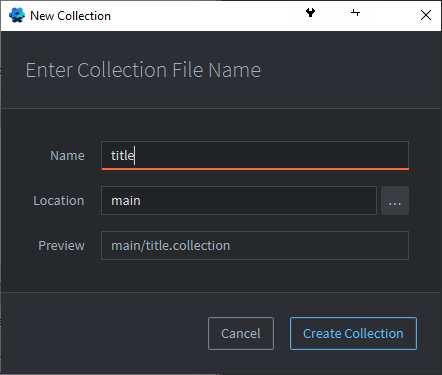
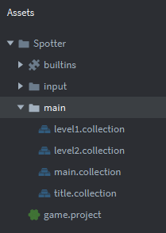
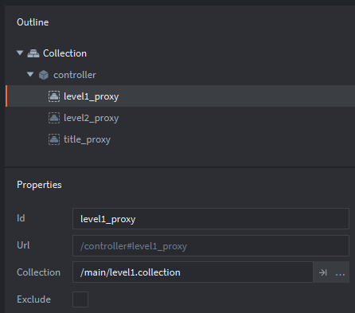

Tutorials for 2D games projects
Spotter | Building the skeletal structure of the game.
- Create a new empty project titled, 'Spotter'.
- You can delete the README.md file. Right click the file and choose 'Delete'.
Games don't start playing the moment they are loaded. Instead, the user is presented with a screen before initiating the start of the game. When the game is over the player is returned to this screen. More complex games also present a menu interface allowing the player to adjust settings, choose levels etc.
In Defold, each screen, often called a "game world" is a collection. By convention, the bootstrap collection, that is the one loaded first, is called main.collection, although it can be changed in the .project file. We will have four collections in this project.
- main.collection - this will be the controller for the other collections. It will not be a game world that the player sees, but instead it will be a utility for other collections to use. You can also use this as a global space for all screens and levels to share.
- title.collection - this will be the title screen that the player sees first and will allow them to choose a level to play.
- level1.collection - this will be level 1 of the game.
- level2.collection - this will be level 2 of the game.
- In the assets panel, right click, 'main' and select, 'New...','Collection'.

- Give the collection the name, 'title' and click, 'Create Collection'.

- In the properties panel, change the name of the collection to be, 'title'.
- Repeat steps 3 to 5 to create two more collections named, 'level1' and 'level2'.
Don't forget you will need to name the file when it is created and change the name property.

- In the assets panel, inside the 'main' folder, double click, 'main.collection'.
- In the outline panel, right click, 'Collection' and select, 'Add Game Object'.
- In the properties panel, change the 'Id' of the game object to be, 'controller'.
- In the outline panel, right click, 'controller' and select, 'Add Component', 'Collection proxy'.

- In the properties panel, change the following properties:
- Id: title_proxy
- Collection: /main/title.collection (you can click the three dots and select this)

- Repeat steps 9 to 11 to create a collection proxy for each of the other collections. Set the 'Id' of the proxies as shown below. Make sure to change the 'Collection' property to match the appropriate collection too.

Before continuing, make sure that your outline window matches the one above otherwise the scripts won't work later.
- Save the changes by pressing CTRL-S or 'File', 'Save All'.
Collections are loaded and closed dynamically when they are needed so that they are not using memory when they are not active. Managing the use of memory in games development is very important. Therefore, to be able to refer to a collection that is not in memory, we use a collection proxy and refer to the Id of that component instead. The 'collection' property ensures the correct collection is loaded and unloaded.
Next we are going to create a script for main.collection that will handle the collection proxies. Stage 1b >
 Craig'n'Dave | Version 1.3
Craig'n'Dave | Version 1.3